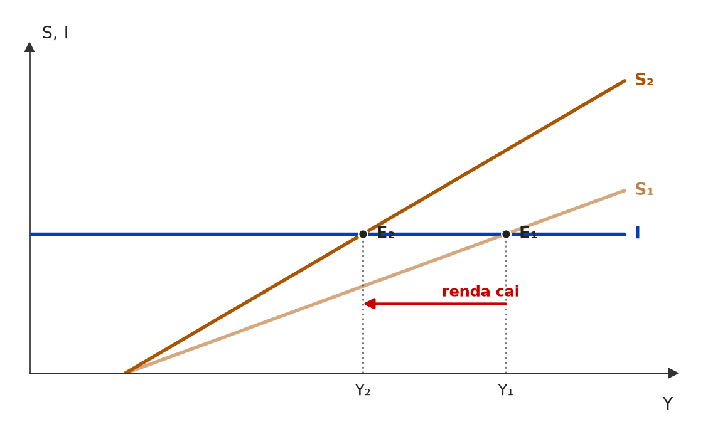

[C/E - IDEG – Prof. Bozan › Pré-TPS/2026 › Demanda efetiva e cruz keynesiana]Sobre a estrutura de multiplicação keynesiana, analise a assertiva abaixo e julgue-a como certa ou errada. Item: Segundo Keynes, mesmo em uma situação de renda zero, a economia ainda apresentaria um nível de consumo, determinado pelo consumo autônomo. Tal situação pode ser apresentada por uma curva positiva traçada em um ponto sobre o eixo vertical, acima da origem, em um gráfico consumo x renda. | ✅ CERTO Segundo Keynes, mesmo em uma situação de renda zero, a economia ainda apresentaria um nível de consumo, determinado pelo consumo autônomo. Tal situação pode ser apresentada por uma curva positiva traçada em um ponto sobre o eixo vertical, acima da origem, em um gráfico consumo x renda. 🎯 Em poucas palavras: Na função C = Ca + cY, Ca > 0 é o consumo com renda zero: a reta do consumo corta o eixo vertical acima da origem e sobe com inclinação c (0 < c < 1). 📖 Destrinchando o tema:
🧐 Dissecando a redação do item: [literalidade] Descrição gráfica correta do intercepto. A redação “curva positiva traçada em um ponto sobre o eixo vertical” é desajeitada, mas significa reta crescente que parte de Ca > 0; o risco é confundir com a função poupança, que começa abaixo da origem. 😈 Para dificultar:
|
❌ [C/E - IDEG – Prof. Bozan › Pré-TPS/2026 › Demanda efetiva e cruz keynesiana]Julgue a assertiva a seguir, sobre a teoria econômica clássica e suas críticas no contexto keynesiano e da ortodoxia econômica. Item: A teoria keynesiana sugere que, em tempos de superprodução, o governo deve atuar como um super demandante, aumentando seus gastos para acelerar a demanda agregada através do multiplicador keynesiano, assim, evitando crises de superprodução e estabilizando a economia. | ✅ CERTO A teoria keynesiana sugere que, em tempos de superprodução, o governo deve atuar como um super demandante, aumentando seus gastos para acelerar a demanda agregada através do multiplicador keynesiano, assim, evitando crises de superprodução e estabilizando a economia. 🎯 Em poucas palavras: “Superprodução” em Keynes é demanda efetiva insuficiente: a oferta possível não encontra compradores. O governo cobre a lacuna gastando, e o multiplicador amplia o efeito. 📖 Destrinchando o tema:
🧐 Dissecando a redação do item: [paráfrase fiel · contraintuitivo] A palavra “superprodução” induz a pensar em excesso de atividade e, portanto, em cortar gastos. Em Keynes, superprodução = sobra de oferta por falta de demanda — e a resposta é gastar. 😈 Para dificultar:
|
❌ [C/E - Armstrong › Pré-TPS/2026 › Demanda efetiva e cruz keynesiana]Julgue o item a seguir, relativo ao modelo keynesiano de determinação da renda. Item: O “Paradoxo da Parcimônia” no modelo keynesiano indica que um aumento exógeno na propensão marginal a poupar de toda a sociedade leva a um aumento do investimento agregado e, consequentemente, a um maior nível de renda de equilíbrio no curto prazo. | ❌ ERRADO O “Paradoxo da Parcimônia” no modelo keynesiano indica que um aumento exógeno na propensão marginal a poupar de toda a sociedade leva a um aumento do investimento agregado e, consequentemente, a um maior nível de renda de equilíbrio no curto prazo. 🎯 Em poucas palavras: É o oposto: poupar mais = consumir menos → a demanda agregada cai, a renda de equilíbrio cai e, no fim, a poupança realizada não sobe (continua igual ao investimento). 📖 Destrinchando o tema:
📈 No gráfico:  Com o investimento autônomo dado, a alta da propensão a poupar gira a reta de poupança (S₁ → S₂): a renda de equilíbrio cai (Y₁ → Y₂) e a poupança realizada volta ao mesmo nível do investimento — ninguém consegue poupar mais no agregado. 🧐 Dissecando a redação do item: [inversão · nexo indevido] O item cola no nome keynesiano o raciocínio clássico (S → I → Y). Dois sinais trocados: o investimento não sobe e a renda cai. 🔥 Paradoxo da parcimônia é tema recorrente, quase sempre cobrado invertido. 😈 Para dificultar:
✍️ Reescrita correta: O “Paradoxo da Parcimônia” no modelo keynesiano indica que um aumento exógeno na propensão marginal a poupar de toda a sociedade leva a uma queda do consumo e da demanda agregada e, consequentemente, a um menor nível de renda de equilíbrio no curto prazo. |
❌ [C/E - Nabuco › Demanda efetiva e cruz keynesiana]Em relação à teoria macroeconômica, julgue o item a seguir. Item: Segundo Keynes, o sistema econômico não pode estar em equilíbrio (com a oferta agregada igual à demanda agregada) quando há desemprego involuntário da força de trabalho. | ❌ ERRADO Segundo Keynes, o sistema econômico não pode estar em equilíbrio (com a oferta agregada igual à demanda agregada) quando há desemprego involuntário da força de trabalho. 🎯 Em poucas palavras: A tese central da Teoria Geral é justamente o equilíbrio com desemprego involuntário: oferta agregada = demanda agregada num nível de produto abaixo do pleno emprego, sem força automática que o corrija. 📖 Destrinchando o tema:
🧐 Dissecando a redação do item: [inversão · troca de ator] O item atribui a Keynes a visão clássica (equilíbrio implica pleno emprego). A negação “não pode” é o ponto a desconfiar; a confusão vem do sentido cotidiano de “equilíbrio”. 😈 Para dificultar:
✍️ Reescrita correta: Segundo Keynes, o sistema econômico pode estar em equilíbrio (com a oferta agregada igual à demanda agregada) quando há desemprego involuntário da força de trabalho. |
[C/E - Nidi/Jacqueline Bueno › Fevereiro/2025 › Demanda efetiva e cruz keynesiana]Na década de 30, durante a Grande Depressão, a teoria econômica debatia, entre outros temas, os determinantes do emprego agregado. A respeito desse debate, julgue o item a seguir. Item: Conforme Keynes, o nível de emprego agregado não se define meramente como um ponto de equilíbrio parcial, dado no encontro de curvas agregadas de oferta e de demanda por trabalho. Para ele, em uma dada estrutura produtiva, o nível de emprego resulta da decisão dos empresários de empregar a força de trabalho em função das expectativas de consumo e de investimento na economia. | ✅ CERTO Conforme Keynes, o nível de emprego agregado não se define meramente como um ponto de equilíbrio parcial, dado no encontro de curvas agregadas de oferta e de demanda por trabalho. Para ele, em uma dada estrutura produtiva, o nível de emprego resulta da decisão dos empresários de empregar a força de trabalho em função das expectativas de consumo e de investimento na economia. 🎯 Em poucas palavras: É o princípio da demanda efetiva: em Keynes, o emprego é decidido pelos empresários conforme as vendas que esperam (consumo + investimento), e não no mercado de trabalho. 📖 Destrinchando o tema:
🧐 Dissecando a redação do item: [paráfrase fiel] Reescreve com cuidado a tese da demanda efetiva. Os moduladores “meramente” e “em uma dada estrutura produtiva” deixam o item preciso. Um candidato apressado pode ver no 1º período uma negação absurda do mercado de trabalho. 😈 Para dificultar:
|
[C/E - Nabuco › Pré-TPS/2024 › Demanda efetiva e cruz keynesiana]Julgue (C ou E) os itens a seguir, de acordo com o que a teoria keynesiana dispõe acerca da demanda efetiva e da oferta e demanda agregadas. Item: O volume de emprego será determinado pelo ponto de intersecção da oferta agregada e da demanda agregada. A definição do volume de emprego é uma atribuição do governo e não dos empresários, como no modelo clássico. | ❌ ERRADO O volume de emprego será determinado pelo ponto de intersecção da oferta agregada e da demanda agregada. A definição do volume de emprego é uma atribuição do governo e não dos empresários, como no modelo clássico. 🎯 Em poucas palavras: Em Keynes, quem decide quanto produzir e quantos contratar são os empresários, com base na demanda efetiva esperada. O governo pode influir nessa demanda, mas não “define” o emprego. 📖 Destrinchando o tema:
🧐 Dissecando a redação do item: [troca de ator · meia-verdade] A 1ª frase reproduz o princípio da demanda efetiva e dá credibilidade; o erro está na 2ª, que transfere ao governo uma decisão que Keynes atribui aos empresários e ainda põe estes no “modelo clássico”. Pista: Keynes defende intervenção, não planejamento do emprego. 😈 Para dificultar:
✍️ Reescrita correta: O volume de emprego será determinado pelo ponto de intersecção da oferta agregada e da demanda agregada. A definição do volume de emprego é uma atribuição dos empresários, com base na demanda efetiva esperada, e não do mercado de trabalho, como no modelo clássico. |
[C/E - Nabuco › Pré-TPS/2024 › Demanda efetiva e cruz keynesiana]Em relação à teoria macroeconômica, julgue o item a seguir. Item: A Teoria Geral do Emprego do Juro e da Moeda (1936), escrita por John Maynard Keynes, redefiniu o debate sobre os determinantes do emprego, da renda e da produção agregados nos anos 1930. De acordo com a abordagem de Keynes, o principal fator que explica a persistência do elevado desemprego é falta de disposição dos trabalhadores desempregados para aceitar redução dos salários reais. | ❌ ERRADO A Teoria Geral do Emprego do Juro e da Moeda (1936), escrita por John Maynard Keynes, redefiniu o debate sobre os determinantes do emprego, da renda e da produção agregados nos anos 1930. De acordo com a abordagem de Keynes, o principal fator que explica a persistência do elevado desemprego é falta de disposição dos trabalhadores desempregados para aceitar redução dos salários reais. 🎯 Em poucas palavras: Para Keynes, o desemprego persistente vem da insuficiência de demanda efetiva. Culpar a recusa dos trabalhadores em aceitar salários menores é a explicação clássica que ele combateu. 📖 Destrinchando o tema:
🧐 Dissecando a redação do item: [troca de conceito · troca de ator] A 1ª frase é contexto verdadeiro sobre a Teoria Geral; o erro está na causa atribuída a Keynes, que é a tese da escola que ele criticava. 🔥 A banca adora pôr a explicação clássica na boca de Keynes. 📚 Autores e teses:
😈 Para dificultar:
✍️ Reescrita correta: A Teoria Geral do Emprego do Juro e da Moeda (1936), escrita por John Maynard Keynes, redefiniu o debate sobre os determinantes do emprego, da renda e da produção agregados nos anos 1930. De acordo com a abordagem de Keynes, o principal fator que explica a persistência do elevado desemprego é a insuficiência de demanda efetiva. |
[C/E - Nabuco › Pré-TPS/2022 › Demanda efetiva e cruz keynesiana]Julgue o item a seguir, acerca dos fluxos internacionais de bens e capital em uma economia aberta. Item: As importações representam parte da renda gerada no país que “vaza” para o exterior. | ✅ CERTO As importações representam parte da renda gerada no país que “vaza” para o exterior. 🎯 Em poucas palavras: No fluxo circular, vazamento é a renda recebida que não volta às empresas nacionais como compra de bens domésticos: poupança, impostos e importações. 📖 Destrinchando o tema:
🧐 Dissecando a redação do item: [literalidade] Reproduz a definição de manual; as aspas em “vaza” marcam o termo técnico. Erraria quem associasse importação a “perda de divisas” ou a conta de capital — o item fala só do fluxo de renda. 😈 Para dificultar:
|
[C/E - Nabuco › Pré-TPS/2022 › Demanda efetiva e cruz keynesiana]A publicação da obra A Teoria Geral do Emprego, do Juro e da Moeda, em 1936, por John Maynard Keynes, foi fundamental para que os economistas se deparassem com duas das principais abordagens acerca da relação entre investimento e poupança. As correntes do pensamento econômico apresentam visões distintas sobre as relações entre o investimento (I) e a poupança (S). Considerando o exposto, julgue o item seguinte. Item: De acordo com Keynes, a poupança era resultado do investimento. Ao estimular a demanda agregada, o investimento induz um aumento na renda e na poupança. | ✅ CERTO De acordo com Keynes, a poupança era resultado do investimento. Ao estimular a demanda agregada, o investimento induz um aumento na renda e na poupança. 🎯 Em poucas palavras: Em Keynes, a causalidade vai de I → Y → S: o investimento eleva a renda pelo multiplicador, e a poupança, função da renda, cresce até igualar o investimento. 📖 Destrinchando o tema:
🧐 Dissecando a redação do item: [literalidade · contraintuitivo] Reproduz a tese central, que contraria o senso comum (“é preciso poupar para investir”). A pista é o verbo “induz”: a poupança é consequência, e a banca cobra justamente essa inversão de causalidade. 📚 Autores e teses:
😈 Para dificultar:
|
[C/E - Nabuco › Pré-TPS/2022 › Demanda efetiva e cruz keynesiana]Em relação à teoria macroeconômica, julgue o item a seguir. Item: Segundo Keynes, o sistema econômico não pode estar em equilíbrio (com a oferta agregada igual à demanda agregada) quando há desemprego involuntário da força de trabalho. | ❌ ERRADO Segundo Keynes, o sistema econômico não pode estar em equilíbrio (com a oferta agregada igual à demanda agregada) quando há desemprego involuntário da força de trabalho. 🎯 Em poucas palavras: A grande novidade de Keynes é justamente o equilíbrio com desemprego involuntário: oferta e demanda agregadas se igualam num ponto (a demanda efetiva) que pode ficar abaixo do pleno emprego. 📖 Destrinchando o tema:
🧐 Dissecando a redação do item: [inversão · troca de conceito] Atribui a Keynes a tese clássica, negando exatamente o que ele demonstrou. Pista: o parêntese define equilíbrio como OA = DA, que é o critério keynesiano — e nesse critério cabe o desemprego. 😈 Para dificultar:
✍️ Reescrita correta: Segundo Keynes, o sistema econômico pode estar em equilíbrio (com a oferta agregada igual à demanda agregada) quando há desemprego involuntário da força de trabalho. |
[C/E - Daniel – Economia CACD (Telegram) › Demanda efetiva e cruz keynesiana]Julgue o item a seguir, relativo à teoria keynesiana. Item: Rejeitando a ortodoxia e sua visão em relação ao desemprego, Keynes se contrapõe à Lei de Say através do princípio da demanda efetiva, uma vez que para ele a ideia que toda oferta gera sua própria demanda não se aplica. | ✅ CERTO Rejeitando a ortodoxia e sua visão em relação ao desemprego, Keynes se contrapõe à Lei de Say através do princípio da demanda efetiva, uma vez que para ele a ideia que toda oferta gera sua própria demanda não se aplica. 🎯 Em poucas palavras: O princípio da demanda efetiva é a negação keynesiana da Lei de Say: é o gasto esperado que determina produção e emprego, e nada garante que ele absorva a produção de pleno emprego. 📖 Destrinchando o tema:
🧐 Dissecando a redação do item: [literalidade] Tese de manual sobre a ruptura keynesiana. Sem armadilha lexical; a única chance de erro é confundir “ortodoxia” com o próprio Keynes ou atribuir a Lei de Say a ele. 😈 Para dificultar:
|
[C/E - Banca não identificada › Demanda efetiva e cruz keynesiana]Julgue o item a seguir, relativo ao pensamento de Keynes. Item: Conforme Keynes, o nível de emprego agregado não se define meramente como um ponto de equilíbrio parcial, dado no encontro de curvas agregadas de oferta e de demanda por trabalho. Para ele, em uma dada estrutura produtiva, o nível de emprego resulta da decisão dos empresários de empregar a força de trabalho em função das expectativas de consumo e de investimento na economia. Assim, poderá persistir o desemprego involuntário enquanto o nível de demanda efetiva for demasiadamente baixo. | ✅ CERTO Conforme Keynes, o nível de emprego agregado não se define meramente como um ponto de equilíbrio parcial, dado no encontro de curvas agregadas de oferta e de demanda por trabalho. Para ele, em uma dada estrutura produtiva, o nível de emprego resulta da decisão dos empresários de empregar a força de trabalho em função das expectativas de consumo e de investimento na economia. Assim, poderá persistir o desemprego involuntário enquanto o nível de demanda efetiva for demasiadamente baixo. 🎯 Em poucas palavras: Em Keynes, o emprego não sai do mercado de trabalho isolado: sai da demanda efetiva — o que os empresários esperam vender em consumo e investimento. Demanda baixa sustenta desemprego involuntário. 📖 Destrinchando o tema:
🧐 Dissecando a redação do item: [paráfrase fiel · modulador relativo] Paráfrase longa da tese central da Teoria Geral. O “meramente” e o “poderá persistir” calibram o item; a tentação de marcar ERRADO vem de achar que Keynes “nega” o mercado de trabalho — ele o subordina à demanda efetiva. 😈 Para dificultar:
|
[C/E - Banca não identificada › Demanda efetiva e cruz keynesiana]Julgue o item a seguir, relativo ao pensamento de Keynes. Item: A suposição feita por Keynes de que os salários nominais e outros elementos de custo permanecem constantes altera a natureza do raciocínio que ele desenvolveu para explicar os determinantes do volume de emprego agregado. | ❌ ERRADO A suposição feita por Keynes de que os salários nominais e outros elementos de custo permanecem constantes altera a natureza do raciocínio que ele desenvolveu para explicar os determinantes do volume de emprego agregado. 🎯 Em poucas palavras: Keynes adota salários nominais constantes só como simplificação expositiva e avisa que o caráter essencial do argumento é o mesmo com ou sem ela: o emprego é determinado pela demanda efetiva, não pela rigidez salarial. 📖 Destrinchando o tema:
🧐 Dissecando a redação do item: [troca de conceito · juízo indevido] O item converte uma hipótese simplificadora em pilar da teoria — confusão entre o Keynes original e a síntese neoclássica. Pergunta-teste: com salários flexíveis o desemprego involuntário some? Para Keynes, não. 😈 Para dificultar:
✍️ Reescrita correta: A suposição feita por Keynes de que os salários nominais e outros elementos de custo permanecem constantes não altera a natureza do raciocínio que ele desenvolveu para explicar os determinantes do volume de emprego agregado. |
[C/E - Banca não identificada › Demanda efetiva e cruz keynesiana]Julgue o item a seguir, relativo ao pensamento de Keynes. Item: Para um quadro de crise, uma proposição de política econômica keynesiana seria o governo ampliar os gastos públicos como forma de elevar a demanda agregada e recuperar o nível de emprego, ao passo que, para um momento de superaquecimento, a recomendação keynesiana seria reduzir gastos. | ✅ CERTO Para um quadro de crise, uma proposição de política econômica keynesiana seria o governo ampliar os gastos públicos como forma de elevar a demanda agregada e recuperar o nível de emprego, ao passo que, para um momento de superaquecimento, a recomendação keynesiana seria reduzir gastos. 🎯 Em poucas palavras: Política fiscal anticíclica: gastar mais na recessão (demanda efetiva insuficiente) e menos no superaquecimento (pressão inflacionária). Keynesianismo não é “gastar sempre”. 📖 Destrinchando o tema:
🧐 Dissecando a redação do item: [literalidade] Descrição correta e simétrica da política anticíclica. A armadilha seria julgar a segunda metade como “não keynesiana” por associar Keynes só a gasto e déficit. 😈 Para dificultar:
|
[C/E - Banca não identificada › Demanda efetiva e cruz keynesiana]Julgue o item a seguir, relativo ao modelo keynesiano de determinação da renda. Item: Segundo o paradoxo da parcimônia, um aumento da poupança, no curto prazo, contribui para elevar o investimento e o nível de equilíbrio do produto interno bruto. | ❌ ERRADO Segundo o paradoxo da parcimônia, um aumento da poupança, no curto prazo, contribui para elevar o investimento e o nível de equilíbrio do produto interno bruto. 🎯 Em poucas palavras: O paradoxo da parcimônia diz o contrário: se todos tentam poupar mais, o consumo cai, a renda de equilíbrio cai pelo multiplicador e a poupança agregada realizada não aumenta. 📖 Destrinchando o tema:
🧐 Dissecando a redação do item: [inversão] O item descreve a visão clássica (poupança → investimento → crescimento) e a batiza com o nome do paradoxo keynesiano, que afirma o oposto. 🔥 A banca cobra o paradoxo invertendo o sinal da renda. 😈 Para dificultar:
✍️ Reescrita correta: Segundo o paradoxo da parcimônia, um aumento da poupança, no curto prazo, não eleva o investimento e reduz o nível de equilíbrio do produto interno bruto. |
[C/E - CEBRASPE › ANTT/2023 › Multiplicadores]A partir da teoria macroeconômica, julgue o item a seguir. Item: Em um modelo keynesiano simples, o efeito de um aumento dos gastos do governo sobre o produto será tão maior quanto maior for a propensão marginal a consumir. | ✅ CERTO Em um modelo keynesiano simples, o efeito de um aumento dos gastos do governo sobre o produto será tão maior quanto maior for a propensão marginal a consumir. 🎯 Em poucas palavras: ΔY = ΔG × 1/(1 − c): quanto maior c, menor o denominador e maior o multiplicador. 📖 Destrinchando o tema:
🧐 Dissecando a redação do item: [literalidade] Enunciado de manual com a estrutura “tão maior quanto maior”, que a CEBRASPE usa para cobrar relações diretas. Bastaria trocar “consumir” por “poupar” para inverter o gabarito. 😈 Para dificultar:
|
[C/E - IDEG – Prof. Bozan › Pré-TPS/2026 › Multiplicadores]Sobre a estrutura de multiplicação keynesiana, analise a assertiva abaixo e julgue-a como certa ou errada. Item: O multiplicador keynesiano demonstra que variações nos gastos autônomos, como o gasto governamental, são amplificadas na economia, resultando em um aumento da renda maior do que o gasto inicial. Esta propriedade refuta a Lei de Say, que afirma que a oferta é infinita, enquanto, para Keynes, a demanda pode ser insuficiente e precisa ser estimulada. | ❌ ERRADO O multiplicador keynesiano demonstra que variações nos gastos autônomos, como o gasto governamental, são amplificadas na economia, resultando em um aumento da renda maior do que o gasto inicial. Esta propriedade refuta a Lei de Say, que afirma que a oferta é infinita, enquanto, para Keynes, a demanda pode ser insuficiente e precisa ser estimulada. 🎯 Em poucas palavras: A Lei de Say não diz que a oferta é infinita: diz que “a oferta cria sua própria demanda” — toda produção gera renda que será gasta, sem insuficiência geral de demanda. 📖 Destrinchando o tema:
🧐 Dissecando a redação do item: [troca de conceito] Item longo e quase todo correto; o erro está numa definição enxertada no meio (“a oferta é infinita”). Em itens de Say, confira a fórmula canônica palavra por palavra. 😈 Para dificultar:
✍️ Reescrita correta: O multiplicador keynesiano demonstra que variações nos gastos autônomos, como o gasto governamental, são amplificadas na economia, resultando em um aumento da renda maior do que o gasto inicial. Esta propriedade refuta a Lei de Say, que afirma que a oferta cria sua própria demanda, enquanto, para Keynes, a demanda pode ser insuficiente e precisa ser estimulada. |
[C/E - IDEG – Prof. Bozan › Pré-TPS/2026 › Multiplicadores]Sobre a estrutura de multiplicação keynesiana, analise a assertiva abaixo e julgue-a como certa ou errada. Item: A propensão marginal a consumir (PMC) reflete a parte da renda disponível que é destinada ao consumo pelas famílias. Keynes postula que uma maior PMC resultaria em um multiplicador mais elevado, o que sugere uma economia mais dinâmica e com ciclos de amplificação da renda mais frequentes e intensos. | ✅ CERTO A propensão marginal a consumir (PMC) reflete a parte da renda disponível que é destinada ao consumo pelas famílias. Keynes postula que uma maior PMC resultaria em um multiplicador mais elevado, o que sugere uma economia mais dinâmica e com ciclos de amplificação da renda mais frequentes e intensos. 🎯 Em poucas palavras: Multiplicador = 1/(1 − PMC): PMC maior → multiplicador maior → cada choque de gasto autônomo é mais amplificado na renda. ⚠️ Gabarito contestável: o núcleo (PMC maior → multiplicador maior → amplificação mais intensa) é correto. Já “mais frequentes” não decorre do multiplicador, que mede a amplitude da resposta, não quantos choques ocorrem. Rigorosamente, esse trecho seria motivo para ERRADO; a banca manteve CERTO lendo a frase como conclusão genérica. 📖 Destrinchando o tema:
🧐 Dissecando a redação do item: [paráfrase fiel · detalhe] Definição + relação PMC–multiplicador corretas; a conclusão final é retórica (“mais dinâmica”, “mais frequentes”). Em provas CEBRASPE, um acréscimo desses pode derrubar o item; aqui o gabarito ficou CERTO. 😈 Para dificultar:
|
[C/E - IDEG – Prof. Bozan › Pré-TPS/2026 › Multiplicadores]Sobre a estrutura de multiplicação keynesiana, analise a assertiva abaixo e julgue-a como certa ou errada. Item: A abordagem keynesiana considera que, em uma economia fechada, para cada aumento nos gastos do governo, há um aumento exato correspondente na renda da economia, invalidando a noção de multiplicador trazida pelos clássicos, especificamente, pela abordagem de David Ricardo. | ❌ ERRADO A abordagem keynesiana considera que, em uma economia fechada, para cada aumento nos gastos do governo, há um aumento exato correspondente na renda da economia, invalidando a noção de multiplicador trazida pelos clássicos, especificamente, pela abordagem de David Ricardo. 🎯 Em poucas palavras: Para Keynes, o aumento da renda é maior que o do gasto (multiplicador 1/(1 − c) > 1). E o multiplicador não é clássico nem ricardiano: é de Kahn (1931), incorporado por Keynes. 📖 Destrinchando o tema:
🧐 Dissecando a redação do item: [dado alterado · troca de ator] Dois erros empilhados: o tamanho do efeito (exato × amplificado) e a autoria (clássicos/Ricardo × Kahn/Keynes). Nome de autor fora do lugar, como Ricardo aqui, é sinal clássico de item fabricado. 😈 Para dificultar:
✍️ Reescrita correta: A abordagem keynesiana considera que, em uma economia fechada, para cada aumento nos gastos do governo, há um aumento mais que proporcional na renda da economia, conforme a noção de multiplicador formulada por Kahn e incorporada por Keynes. |
❌ [C/E - Armstrong › Pré-TPS/2026 › Multiplicadores]Julgue o item a seguir, relativo ao modelo keynesiano simples. Item: Assumindo C(Y) = Ca + cY, (I) e (G) autônomos e (0 < c < 1), a renda de equilíbrio é Y = (Ca + I + G)/(1 − c). Logo, o multiplicador pode ser reescrito como 1/(1 − c). Sendo (c) estável no curto prazo, as flutuações do nível de atividade decorrem primordialmente da volatilidade do investimento, o que justifica estabilizadores automáticos. | ✅ CERTO Assumindo C(Y) = Ca + cY, (I) e (G) autônomos e (0 < c < 1), a renda de equilíbrio é Y = (Ca + I + G)/(1 − c). Logo, o multiplicador pode ser reescrito como 1/(1 − c). Sendo (c) estável no curto prazo, as flutuações do nível de atividade decorrem primordialmente da volatilidade do investimento, o que justifica estabilizadores automáticos. 🎯 Em poucas palavras: Resultado canônico: Y = (Ca + I + G)/(1 − c), multiplicador 1/(1 − c). Com c estável, o que oscila é o investimento, amplificado pelo multiplicador — daí os estabilizadores automáticos. 📖 Destrinchando o tema:
🧐 Dissecando a redação do item: [literalidade · modulador relativo] Junta três ideias corretas (fórmula, multiplicador, instabilidade do investimento) e fecha com uma implicação de política. O “primordialmente” protege o item; a fórmula escrita em linha costuma assustar quem errou. 😈 Para dificultar:
|
[C/E - Nabuco › Multiplicadores]Em relação à macroeconomia, julgue o item a seguir. Item: Considere uma economia fechada sem governo, com função consumo C = 200 + 0,75Y e investimento autônomo de 100. A renda de equilíbrio é Y = 1.200, e o multiplicador keynesiano de gastos autônomos é 4. | ✅ CERTO Considere uma economia fechada sem governo, com função consumo C = 200 + 0,75Y e investimento autônomo de 100. A renda de equilíbrio é Y = 1.200, e o multiplicador keynesiano de gastos autônomos é 4. 🎯 Em poucas palavras: Multiplicador 1/(1 − 0,75) = 4; gasto autônomo 200 + 100 = 300; renda 4 × 300 = 1.200. 📖 Destrinchando o tema:
🧐 Dissecando a redação do item: [detalhe] Item de cálculo puro. As armadilhas comuns são esquecer o consumo autônomo no gasto autônomo (4 × 100 = 400) ou usar 1/0,75 como multiplicador. 😈 Para dificultar:
|
[C/E - Nabuco › Pré-TPS/2024 › Multiplicadores]Julgue (C ou E) os itens a seguir, de acordo com o que a teoria keynesiana dispõe acerca da demanda efetiva e da oferta e demanda agregadas. Item: De acordo com as ideias keynesianas, o governo aumentou seus gastos em $100 milhões. Sabendo que a propensão a consumir da população corresponde ao número 0,75, o aumento esperado na renda local será de $200 milhões. | ❌ ERRADO De acordo com as ideias keynesianas, o governo aumentou seus gastos em $100 milhões. Sabendo que a propensão a consumir da população corresponde ao número 0,75, o aumento esperado na renda local será de $200 milhões. 🎯 Em poucas palavras: Com c = 0,75, o multiplicador é 1/(1 − 0,75) = 4: ΔY = 4 × 100 = $400 milhões, não 200. 📖 Destrinchando o tema:
🧐 Dissecando a redação do item: [dado alterado] O enunciado é armado para a conta; o erro está só no número final. Itens de multiplicador quase sempre premiam quem calcula 1/(1 − c) e punem quem estima de cabeça. 😈 Para dificultar:
✍️ Reescrita correta: De acordo com as ideias keynesianas, o governo aumentou seus gastos em $100 milhões. Sabendo que a propensão a consumir da população corresponde ao número 0,75, o aumento esperado na renda local será de $400 milhões. |
[C/E - Nidi/Jacqueline Bueno › Multiplicadores]Julgue o item a seguir, relativo aos efeitos da política fiscal no modelo keynesiano. Item: A adoção de uma política fiscal expansionista de aumento dos gastos públicos provoca um efeito de estímulo à demanda agregada maior do que uma política fiscal expansionista baseada na redução de impostos sobre a renda. | ✅ CERTO A adoção de uma política fiscal expansionista de aumento dos gastos públicos provoca um efeito de estímulo à demanda agregada maior do que uma política fiscal expansionista baseada na redução de impostos sobre a renda. 🎯 Em poucas palavras: O gasto entra inteiro na demanda já na 1ª rodada; o corte de impostos só vira gasto na fração c (o resto é poupado). Multiplicador do gasto 1/(1 − c) > do imposto c/(1 − c). 📖 Destrinchando o tema:
🧐 Dissecando a redação do item: [detalhe · literalidade] Resultado clássico de comparação de multiplicadores. Quem erra costuma achar que “R$ 1 é R$ 1” nos dois instrumentos e esquece o vazamento da 1ª rodada. 😈 Para dificultar:
|
[C/E - Nabuco › Pré-TPS/2023 › Multiplicadores]Com base no modelo IS-LM-BP, julgue o item seguinte. Item: Abertura econômica tende a aumentar o multiplicador dos gastos do governo sobre o produto da economia. | ❌ ERRADO Abertura econômica tende a aumentar o multiplicador dos gastos do governo sobre o produto da economia. 🎯 Em poucas palavras: Abrir a economia eleva a propensão marginal a importar (m), que entra como vazamento no denominador do multiplicador 1/(1 − c + m): o multiplicador diminui. 📖 Destrinchando o tema:
🧐 Dissecando a redação do item: [inversão] Troca o sentido do efeito. Quem associa “abertura” a “crescimento” marca CERTO por intuição; o item cobra só a mecânica do denominador. 😈 Para dificultar:
✍️ Reescrita correta: Abertura econômica tende a reduzir o multiplicador dos gastos do governo sobre o produto da economia. |
[C/E - Prof. Rodrigo Teixeira › Intensivo Pré-TPS/2023 › Multiplicadores]O Brasil fez uso da política fiscal durante a pandemia, com o governo elevando gastos com saúde e educação, reduzindo ou adiando o pagamento de impostos, bem como pagando auxílio às famílias mais pobres. A este respeito, julgue o item a seguir. Item: Segundo a teoria do multiplicador keynesiano, o impacto total, na renda agregada, do pagamento do auxílio emergencial será positivo, mas menor que o valor do auxílio, visto que a propensão a consumir é menor que 1. | ❌ ERRADO Segundo a teoria do multiplicador keynesiano, o impacto total, na renda agregada, do pagamento do auxílio emergencial será positivo, mas menor que o valor do auxílio, visto que a propensão a consumir é menor que 1. 🎯 Em poucas palavras: PMgC menor que 1 é o que torna o multiplicador finito, não menor que 1. O multiplicador das transferências é c/(1 − c), que supera 1 sempre que c > 0,5 — caso típico das famílias pobres. 📖 Destrinchando o tema:
🧐 Dissecando a redação do item: [nexo indevido · inversão] A premissa é verdadeira (c < 1) e o efeito positivo também; o erro é o nexo: c < 1 não implica impacto menor que o auxílio. 🔥 Itens de multiplicador gostam de usar uma condição verdadeira para tirar dela uma conclusão que não decorre. 😈 Para dificultar:
✍️ Reescrita correta: Segundo a teoria do multiplicador keynesiano, o impacto total, na renda agregada, do pagamento do auxílio emergencial será positivo e tende a superar o valor do auxílio, visto que a propensão a consumir das famílias mais pobres é elevada (acima de 0,5). |
[C/E - Prof. Rodrigo Teixeira › Intensivo Pré-TPS/2023 › Multiplicadores]O Brasil fez uso da política fiscal durante a pandemia, com o governo elevando gastos com saúde e educação, reduzindo ou adiando o pagamento de impostos, bem como pagando auxílio às famílias mais pobres. A este respeito, julgue o item a seguir. Item: O fato de os consumidores de baixa renda terem diversos itens importados em suas cestas de consumo, por exemplo os eletrônicos comprados da China a preços mais baixos, tende a reduzir o efeito de políticas fiscais expansionistas na renda doméstica. | ✅ CERTO O fato de os consumidores de baixa renda terem diversos itens importados em suas cestas de consumo, por exemplo os eletrônicos comprados da China a preços mais baixos, tende a reduzir o efeito de políticas fiscais expansionistas na renda doméstica. 🎯 Em poucas palavras: Consumo de importados eleva a propensão marginal a importar: parte do estímulo “vaza” para produtores estrangeiros, e o multiplicador doméstico, 1/(1 − c + m), diminui. 📖 Destrinchando o tema:
🧐 Dissecando a redação do item: [modulador relativo · paráfrase fiel] Traduz o conceito de vazamento por importações para um exemplo concreto. O “tende a” protege o item, e “renda doméstica” delimita o efeito. O contexto da pandemia é só moldura. 😈 Para dificultar:
|
[C/E - Nabuco › Multiplicadores]Em relação aos conceitos macroeconômicos, julgue o item a seguir. Item: Segundo um modelo keynesiano simples, uma política fiscal expansionista representada pela redução de tributos incidentes sobre a renda tende a ser mais eficaz, no sentido de impactar positivamente a renda, em países cuja população é mais rica do que em países cuja população é mais pobre. | ❌ ERRADO Segundo um modelo keynesiano simples, uma política fiscal expansionista representada pela redução de tributos incidentes sobre a renda tende a ser mais eficaz, no sentido de impactar positivamente a renda, em países cuja população é mais rica do que em países cuja população é mais pobre. 🎯 Em poucas palavras: O efeito de um corte de tributos depende da PMgC (multiplicador c/(1 − c)). Populações mais pobres gastam fração maior da renda extra → corte mais eficaz onde a população é mais pobre. 📖 Destrinchando o tema:
🧐 Dissecando a redação do item: [inversão] Troca os polos (rica × pobre) de uma relação correta. Pergunta-teste: quem gasta mais de cada real extra? A resposta define onde o multiplicador é maior. 😈 Para dificultar:
✍️ Reescrita correta: Segundo um modelo keynesiano simples, uma política fiscal expansionista representada pela redução de tributos incidentes sobre a renda tende a ser mais eficaz, no sentido de impactar positivamente a renda, em países cuja população é mais pobre do que em países cuja população é mais rica. |
[C/E - Nabuco › Multiplicadores]Em relação às políticas monetária e fiscal, julgue o item a seguir. Item: Considere uma economia em que o governo está planejando implementar uma expansão fiscal para estimular a atividade econômica. Se a propensão marginal a consumir for igual a 0,8, o multiplicador fiscal será maior do que se a propensão marginal a consumir for igual a 0,5. | ✅ CERTO Considere uma economia em que o governo está planejando implementar uma expansão fiscal para estimular a atividade econômica. Se a propensão marginal a consumir for igual a 0,8, o multiplicador fiscal será maior do que se a propensão marginal a consumir for igual a 0,5. 🎯 Em poucas palavras: No modelo keynesiano simples, o multiplicador é 1/(1 − c): com c = 0,8 vale 5; com c = 0,5 vale 2. Quanto maior a PMgC, maior o multiplicador. 📖 Destrinchando o tema:
🧐 Dissecando a redação do item: [literalidade] Item de conta direta: aplica a fórmula de manual com dois valores de c. A armadilha seria inverter a lógica e achar que consumir mais “gasta” o estímulo; é o contrário — o que interrompe a cadeia é a poupança. 😈 Para dificultar:
|
[C/E - Banca não identificada › Multiplicadores]Julgue o item a seguir, relativo ao multiplicador keynesiano. Item: Em uma economia aberta, caso a propensão marginal para poupar seja igual a 0,25 e a propensão marginal para consumir bens importados, igual a 0,15, então o multiplicador keynesiano será igual a 10. | ❌ ERRADO Em uma economia aberta, caso a propensão marginal para poupar seja igual a 0,25 e a propensão marginal para consumir bens importados, igual a 0,15, então o multiplicador keynesiano será igual a 10. 🎯 Em poucas palavras: Na economia aberta sem governo, o multiplicador é 1/(s + m) = 1/(0,25 + 0,15) = 1/0,4 = 2,5. O 10 sai de quem subtrai m em vez de somar (1/0,10). 📖 Destrinchando o tema:
🧐 Dissecando a redação do item: [dado alterado] Item de cálculo com o número errado escolhido de propósito: 10 = 1/(0,25 − 0,15), resultado de quem trata a importação como injeção. Confira sempre o sinal de m. 😈 Para dificultar:
✍️ Reescrita correta: Em uma economia aberta, caso a propensão marginal para poupar seja igual a 0,25 e a propensão marginal para consumir bens importados, igual a 0,15, então o multiplicador keynesiano será igual a 2,5. |
[C/E - Banca não identificada › Multiplicadores]Julgue o item a seguir, relativo à transmissão internacional das flutuações econômicas. Item: Diz-se que uma expansão em uma economia como a dos Estados Unidos tende a gerar expansões econômicas em outros países pois as importações americanas irão aumentar. | ✅ CERTO Diz-se que uma expansão em uma economia como a dos Estados Unidos tende a gerar expansões econômicas em outros países pois as importações americanas irão aumentar. 🎯 Em poucas palavras: Importação de um país é exportação de outro. Se a renda americana sobe, as importações (M = M₀ + mY) sobem, e o gasto autônomo dos parceiros cresce — com multiplicador. 📖 Destrinchando o tema:
🧐 Dissecando a redação do item: [paráfrase fiel · modulador relativo] Mecanismo-padrão do canal comercial, protegido por “tende a”. A dúvida que derruba o candidato é pensar que importar “tira” renda do país — e esquecer que é renda para o exportador. 😈 Para dificultar:
|